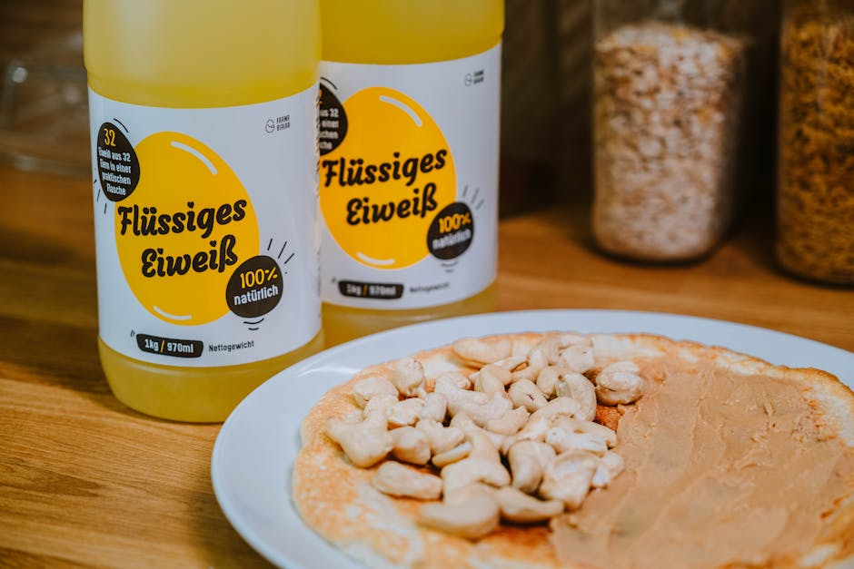

← Back to all nutrition guides
How To Lose Weight With Slow Metabolism Over 45
A realistic guide for busy professionals over 40.
Are you feeling frustrated with your weight as you juggle work, family, and a packed schedule? If you’re a man over 40, tired of trying to count calories while managing everything else life throws at you, you’re not alone. It can seem impossible to shed those stubborn pounds when your metabolism isn’t cooperating. This isn’t just about food; it’s about finding a way that fits into your busy life without adding more stress. Let’s find a simpler path that works for you, not against you.
Why This Is So Hard (And You're Not Crazy)
We get it—juggling a career, family commitments, and personal interests leaves little room for focusing on nutrition. You might grab quick meals that are convenient but don’t help with weight loss. Fatigue may lead you to choose less healthy options purely for the sake of energy. Over time, small habits build up and the scale seems stuck, leaving you feeling defeated. You want change, but with a packed schedule, it can feel overwhelming. Understanding why things are this way is the first step to making your routine work for you.
Want a personalized version of this strategy?
Try the AI Food Coach
Simple Strategy
- 1. Focus on protein: Aim to include lean protein in each meal. This keeps you full longer and helps maintain muscle mass, which can support your metabolism.
- 2. Choose mindful meals: Instead of tracking every calorie, plan meals around whole foods. Think veggies, whole grains, and healthy fats—simple to prepare and satisfying.
- 3. Stay hydrated: Drink water before meals. It helps control hunger and can make you feel more energetic throughout the day.
What This Looks Like
Imagine it’s a typical Tuesday. You rush out the door without breakfast, grabbing coffee on the way to work. At lunch, you opt for takeout—quick but heavy on calories. After a long day, you pick up pizza for dinner because cooking seems impossible. You’re exhausted, and the last thing on your mind is eating a salad. You want to make better choices, but your routine has left you feeling stuck and unable to prioritize health. It’s a cycle that many like you are experiencing daily.Common Mistakes
- 1. Relying on fast food: It’s easy to go for takeout, but these meals are often high in calories and low in nutrients.
- 2. Skipping meals: This leads to overeating later in the day, which can sabotage your weight loss goals.
- 3. Ignoring snacks: Healthy snacks can help keep your metabolism firing but reaching for chips instead won't help your efforts.
These strategies work best when personalized to your lifestyle and goals.
Stop Guessing What to Eat Every Day
Most people don’t fail because they don’t know what’s healthy. They fail because they’re busy, tired, and making decisions on the fly. Today’s Food Coach removes that friction by giving you a simple daily plan based on your goals.
Get Your Daily PlanRelated Nutrition Guides
- What To Eat For Lunch At Work To Lose Weight Men
- Why Is It So Hard To Lose Weight After 45 Male
- What Should A 50 Year Old Man Eat To Lose Weight
Why This Is Hard to Stick To
It's not that you don't know what to do; it's the chaos of daily life that makes it all feel overwhelming. You battle decision fatigue every day, and inconsistency can derail your best intentions. Rather than trying to keep track of everything, imagine a straightforward system that provides you with personalized meal options tailored to fit your busy lifestyle. Simplify your approach and regain control over your nutrition without the stress.
Try Today's Food Coach
Generate a personalized meal strategy based on your lifestyle and goals.
Try the AI Food CoachFrequently Asked Questions
Can I really lose weight without tracking calories?
Absolutely! Focusing on overall food quality and mindful eating habits can lead to weight loss without the hassle of counting every calorie.
What if I don’t have time to cook?
Meal prepping or choosing quick, healthy snacks can make a big difference. Whole foods don’t have to take a lot of time to prepare.
Is exercise necessary for weight loss?
While exercise is beneficial, focusing on nutrition can also lead to weight loss. Even small lifestyle changes, like walking more, can add up over time.